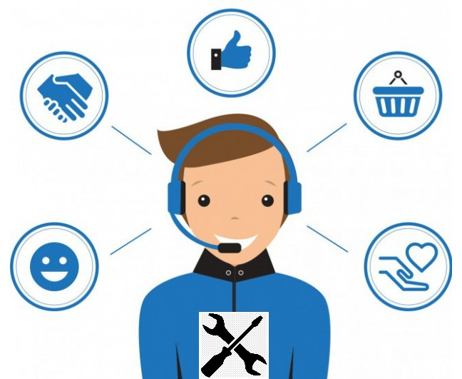
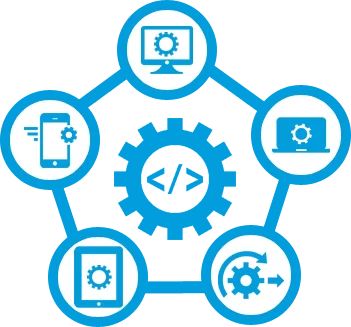
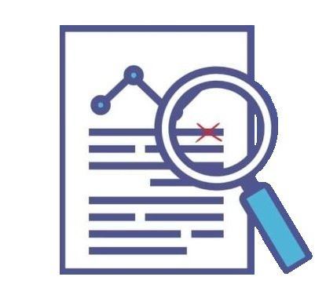
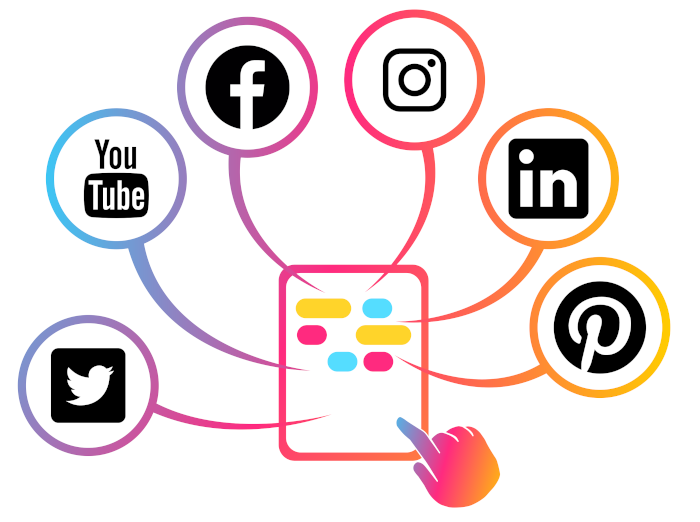

¡Hola! 🚀
¿Cómo estás? Espero que bien. 🙏 Mi nombre es, Willie David Roa Hidalgo y te doy la bienvenida a mi portafolio profesional. 😊
Servicios que Ofrezco
Asistencia Virtual
Apoyo Técnico y Servicio al Cliente
Data Entry

Desarrollo de Software
Proofreading o Corrección de Textos
Community Manager
Pruebas de Productos y Opiniones
Sobre Mí
Soy un colaborador apasionado por la satisfacción de mis clientes desde muy temprana edad. Con más de 10 años de experiencia laboral en Atención a Clientes, Soporte Técnico y TI. Experto en resolución de problemas; Ayudando, guiando y orientando, con mucha empatía, paciencia y eficacia. Con conocimientos en desarrollo web que fortalecen mi capacidad para resolver incidencias complejas, y crear soluciones innovadoras.
• Si buscas una persona respetuosa, honesta, confiable y organizada, estaré encantado de ayudarte. ¡Conversemos!
Experiencia Profesional
Full Stack Web Developer JavaScript en Proyectos Propios
Mar 2024 – Presente
• Desarrollé este portafolio, y con el stack PERN, el frontend y el backend de mi proyecto WJK. En las próximas semanas estaré iniciando el proceso de integración entre ambos.
Community Manager en AMOV IT
Oct 2016 – Ene 2023
• Durante más de 6 años y desde mi país de residencia (DOM), pertenecí al equipo pionero que vía redes sociales (Facebook, Instagram y Twitter), construyó la comunidad de clientes que requerían asistencia para los servicios de telecomunicaciones de Claro Puerto Rico. Equipo que a la misma vez, también les brindaba el servicio al cliente y el soporte técnico.
• Implementé soluciones efectivas y eficaces que ayudaron a reducir los tiempos de resolución de problemas y a maximizar la satisfacción de los clientes.
• Brindaba mentoría a los nuevos integrantes del equipo, mejorando su productividad y adaptabilidad al cargo, contribuyendo de tal manera con su desarrollo profesional.
Representante de Red o Help Desk en AMOV IT
Ago 2012 – Oct 2016
• Durante más de 4 años, brindé asistencia técnica vía llamadas telefónicas, a las personas que tenían servicios de telecomunicaciones de Claro Puerto Rico.
• También les brindaba soporte y asistencia a los nuevos integrantes del equipo, mejorando su productividad y adaptabilidad al cargo.
Algunos Ejemplos y Proyectos de lo que hago
Moderación de Contenido y Asistencia por Redes Sociales
Programación de Actividades


WDRoa.dev
(mi portafolio profesional)
⚠️ Los proyectos de programación aun tienen mucho por mejorar.
Conocimientos y Habilidades
Estudios Realizados
Full Stack Web Developer JavaScript
Ago 2022 – Mar 2024
Platzi
CCNA (Cisco Certified Network Associate)
Jun 2010 – Sep 2011
Instituto Tecnológico De Las Américas (ITLA)
Técnico En Informática
(Bachiller General)
Ago 2008 – Jun 2010
Politécnico Cristo Obrero
Entre otros estudios más
Toca la siguiente imagen, para ver todos mis certificados: